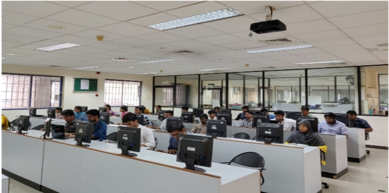
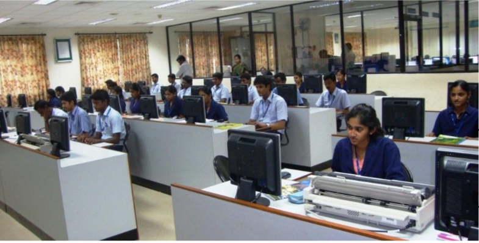
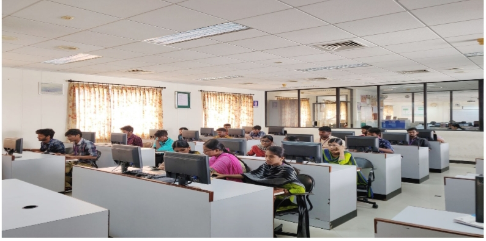
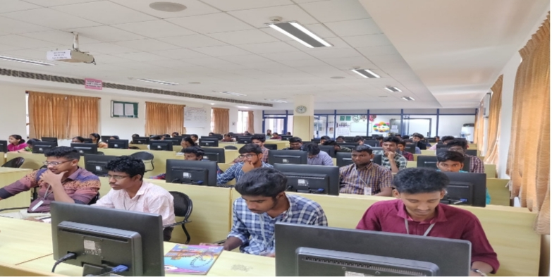
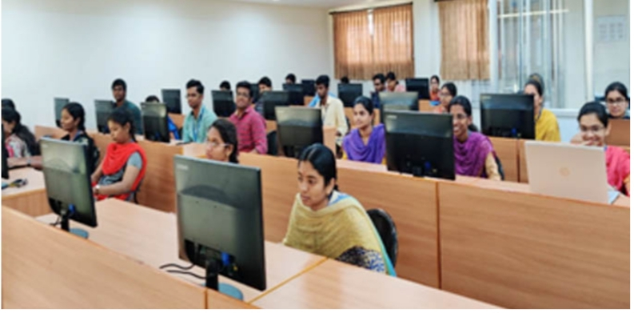
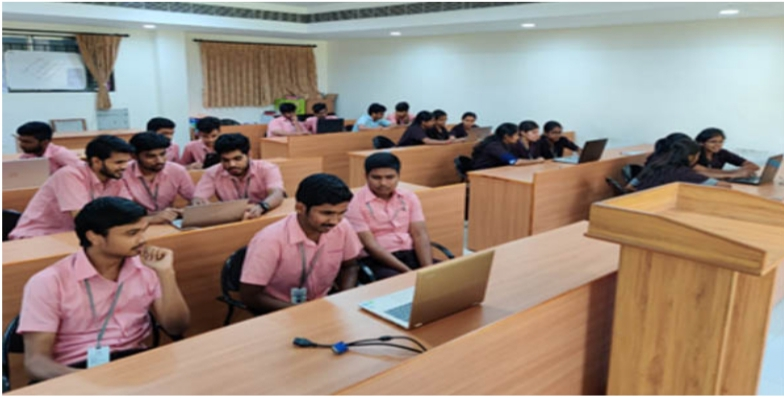

| Information Technology Highlights Laboratories Faculty Department Library Patents |
System Software Technology
The objective of system software lab is to make students familiarized with various operating systems (open source) particularly Linux and debian distributions like Fedora and ubuntu. Students are trained to work with various programming languages in Linux working environment. This lab is equipped with 38 personal computers.
RDBMS Laboratory
In RDBMS lab, we train students to create databases, relational tables and relevant manipulations in database using MySQL (open source) in Ubuntu. This lab is equipped with 38 computer systems.
Network Laboratory
Network laboratory provides hands-on experience to various concepts studied by the undergraduate and postgraduate students related to Computer and Communication Networks. The students are trained in the laboratory to enhance their practical knowledge and to provide solutions to real time issues. Open source tools like NS2, NS3 and Wireshark are used to simulate and study the performance of various network scenarios which impart latest practical skills to students.
Enterprise Computing Laboratory
Enterprise Computing lab has high configuration computers with core i3 processors. This lab is utilized by the students to learn and develop enterprise related applications. This lab is provided with IBM Rational Software Architect for project planning. This lab is provided with Android Studio to develop android applications and also equipped with Hadoop environment to develop data analytics based applications.
Computing Laboratory
This lab has latest high configuration systems with core i3 processors, facilitating students to learn programming languages such as C, C++, Java & Python and Open source software like NS2, Cooja and Mysql. This lab is equipped with 25 computer systems and BYOD facility for 7 Terminals.
Wireless Network Laboratory
This lab provides (BYOD) a well designed space which allows students to bring their own hardware into the lab and connect directly to networks and work on any latest technologies. 26 Terminals may be operated at a time.